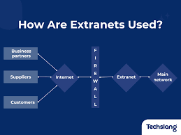

Definition: An extranet is a private network that extends an organization's intranet to include authorized users outside the organization, such as partners, suppliers, or customers.
It allows controlled access to specific resources and information, facilitating collaboration and communication with external parties while maintaining security and privacy.
For example, an extranet can be used by a company to allow its suppliers to access inventory information and place orders, or by a bank to provide its customers with secure access to their account information.